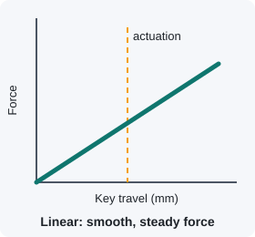
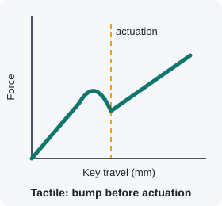
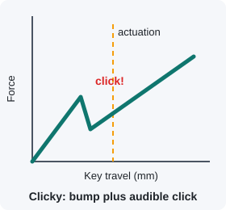
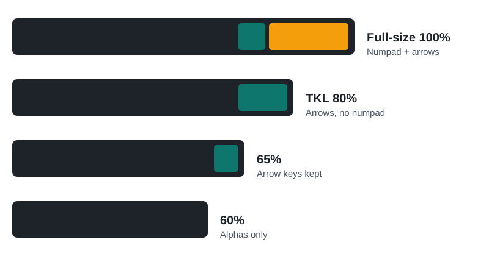

Linear
A smooth, consistent press from top to bottom with no bump. Popular with gamers for fast, repeated presses.
The switch under each key decides how your keyboard feels and sounds. Every mechanical switch falls into one of three families.

A smooth, consistent press from top to bottom with no bump. Popular with gamers for fast, repeated presses.

A noticeable bump tells your finger the key has registered. A comfortable all-around choice for typing and gaming.

A tactile bump plus a sharp click sound. Satisfying for typists, but loud in shared rooms and on voice calls.
Filter by family and tap the star to save switches you want to try. Your favorites stay saved on this device.
Layout size is just as important as the switch. Smaller boards save desk space and give your mouse more room, but you give up keys that you might use every day.

| Layout | Keys (approx.) | Best for |
|---|---|---|
| Full-size (100%) | 104 | Spreadsheets and data entry that need a number pad |
| Tenkeyless (TKL, 80%) | 87 | Gamers who want more mouse room but keep the function row |
| 65% | 68 | Compact desks while still keeping dedicated arrow keys |
| 60% | 61 | Travel and minimal setups; arrows move to a function layer |